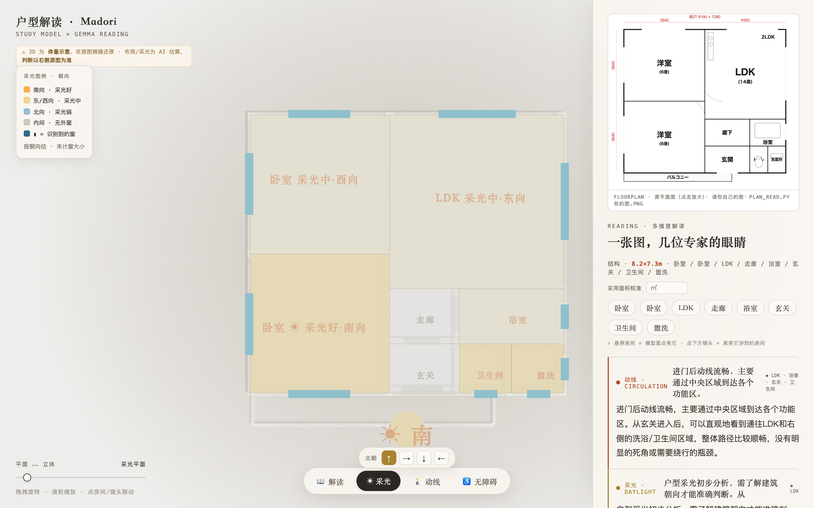

Gemma 4 · 多模态视觉GDG Hackathon · 赛道 B本地隐私 + 云端精度Three.js 白模
普通人看户型图，只看得懂
「几室几厅」。Madori 让你看懂全部。
图上写着什么、缺了什么、哪里有坑——普通人看不出来。
Madori 用 Gemma 4 的眼睛，把建筑师的读图能力，降维成一眼就能看到的画面。

图上写着什么、缺了什么、哪里有坑——普通人看不出来。
Madori 用 Gemma 4 的眼睛，把建筑师的读图能力，降维成一眼就能看到的画面。
人们对着几张看不懂的户型图，做出了人生中最大的居住决定——租房、买房。在房东和中介面前，不会读图的人天然处在信息劣势。Madori 想把一位建筑师的读图能力，免费、私密地交到每个人手里。
不是给你一段段文字让你读，而是把专业分析直接画在户型的 3D 平面上——切一下视图，分析就浮现在图上。



「能看图」不等于「读得准、读得稳」。一次性把整张图丢给模型让它讲六个镜头，它很容易漂移——同一个房间，讲动线时叫「主卧」，讲采光时又叫「卧室 A」，整份解读就不可信了。所以做了一个刻意的工程编排：
Gemma 4 负责它最强的事——看懂图、识别房间、给出多维度的专业理解。它是整个产品的编排核心（orchestrator）。
采光等级、动线路径、面积换算这些确定性的事，交给代码精确算。模型不擅长的算术不让它硬扛，于是结果稳、可复现。
诚实分级是这个项目的底线：采光是确定性几何计算（做实）；动线 / 无障碍是示意 / 提示（标注清楚，不冒充精确）。读不准的脏图会自动降级成外框 + 提示，绝不画一个骗你的精细模型。
同一套 extract → lock → multi-lens 编排，跑在两个 Gemma 4 上。这正是边缘小模型与云端大模型分工的现实写照。
gemma4:e4bgemma-4-31b在浏览器里打开白模查看器，拖一拖、转一转、切四个视图——或者看 90 秒 Demo。